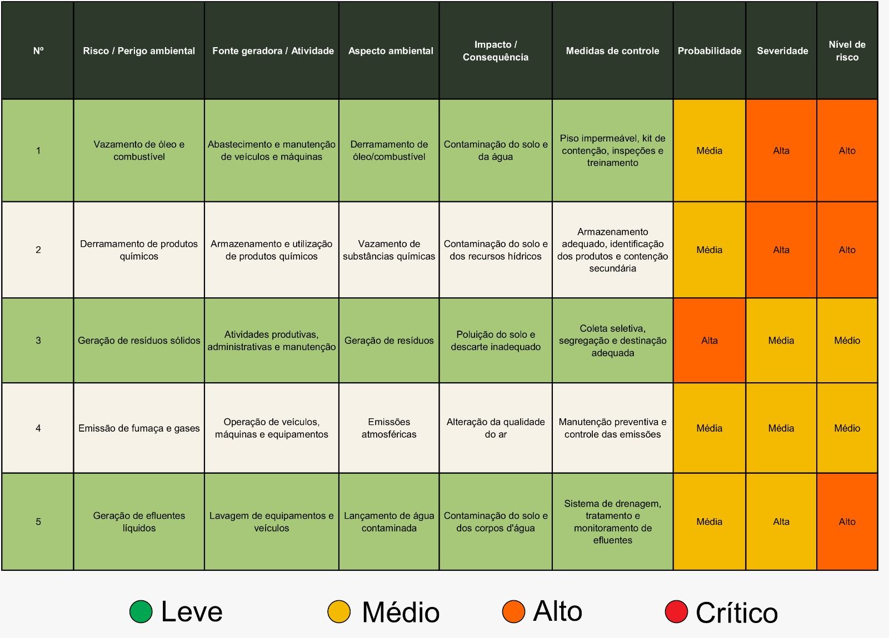
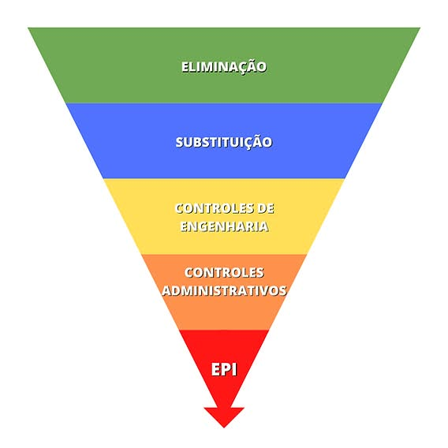

← Início
Segurança do Trabalho
Prevenir acidentes, identificar riscos e garantir um ambiente de trabalho seguro e saudável para os funcionários.
Objetivo
O que a área faz dentro de uma consultoria.
A área de Segurança do Trabalho em uma consultoria tem como objetivo prevenir acidentes, identificar riscos e garantir um ambiente de trabalho seguro e saudável para os funcionários.
Prevenir
Acidentes no dia a dia do trabalho.
Identificar
Riscos presentes no ambiente.
Garantir
Um ambiente seguro e saudável para os funcionários.
Matriz de riscos ambientais
Riscos identificados, com probabilidade, severidade e nível de risco.

Toque na imagem para ampliar.
Hierarquia de controles
Ordem de prioridade das medidas de controle, da mais à menos eficaz.

Vamos conversar sobre a sua empresa?
Fale com a nossa equipe e receba uma proposta de diagnóstico.
Entrar em contato